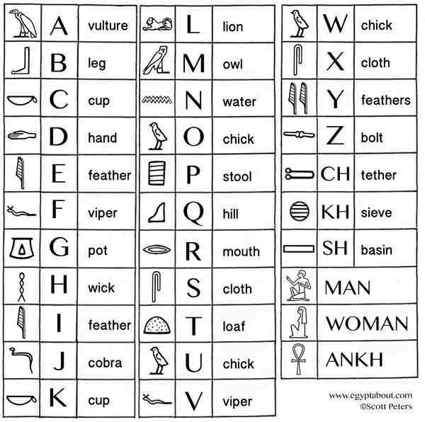

Tech: Now and Then

January 4th, 2021.
As humans, we talk a lot. After all, we need to talk to one another to understand things. But, where did we develop our ability to communicate? How did we agree on our speech? How did it ever become more than grunts and gestures? Let's ask our ancestors long ago in 500,000 BCE, where methods of communication were thought to have been expressed in a recoverable manner.
The cave painting in Lascaux, France, which is thought to be the oldest cave painting in existence.
Speech wasn't a thing yet, due to the underdeveloped larynges in our throats. Our ancestors thought of using caves and a dyeing agent to paint on walls and use that as communication, according to Shigeru Miyagawa (MIT linguist who studied these paintings and their locations). The sound of their voices may have bounced off the walls and been conveying ideas in these caves due to the acoustics in them. After a long time, we thought to use something else.
26th century BCE Sumerian cuneiform script in Sumerian language, listing gifts for a high priestess.
We started to use symbols to communicate our languages. These symbols were called Cuneiform, and they could easily tell someone what you were thinking about without the need to be there. It was also used to mark down officials' rulings and laws, as seen with the Code of Hammurabi. A similar kind of writing was used in Egypt, but it slowly shifted over time into something much more recognizable...
A basic hieroglyph-to-letter conversion chart. These weren't concrete letters, as they weren't exact letters, but it gives a basic description.
The Egyptians started to develop a sort-of alphabet after a while, as the hieroglyphs that they used were slowly becoming more and more literate and descriptive. By 2700 BCE, 22 hieroglyphs had been created to assemble a basic alphabet that would be used to communicate on papyrus or any other medium where writing could be spread. This did not translate to Egyptian speech though, as that was an entirely different system to them. This language eventually spread into northern regions of Egypt by travelers and traders going there and went to the Greeks.

A basic Greek alphabet, which features the letters, how they'd be pronounced, and what their names were.
The Greek alphabet started a trend of using letters to make words. These words could be easily communicated in speech and written down, making them much more efficient than the things used before. But you still needed papyrus to write things down, making them difficult to communicate other than verbally. Then, the Chinese figured out a solution to this issue.
Tsai Lun invented paper in 105 BC, which was used to easily print many letters and numbers without needing a specific plant, as paper was just made out of cotton, a more common plant. They didn't originally use a quill, as they used a stylus made out of reed and a strange pigment. The quill only started being used in 1250!
>A photo of the movable type created by a Buddhist monk, which was able to be arranged to make many different pages and print on a piece of paper using ink on the letters.
The type pictured here was able to make many Buddhist books incredibly easy, as they didn't have to make entire pages or write it by hand. This was later used by Johannes Gutenberg in 1450, who was able to assemble the Bible from these wood-block-type letters. After word of Johannes Gutenberg's invention got out, many people copied his design and continued to innovate.
Charles Fenerty knew making paper though cotton was a long and arduous process, so he theorized on how to make it easier. As such, he created paper that could be made out of wood pulp in 1844, which was much easier to make and get instead of rag paper (the paper made out of cotton).

Chester Carlson's first ever printer, which spurred the mechanical printing industry to life.
Finally, the photocopier was invented by Chester Carlson. He created this for office use, as he needed to copy many documents and files quickly in his field of work and the mechanical types of the time weren't cutting it. He then figured out Xerography, which was the process of attracting toner particles to electrostatic charges that would form an image. That was fun to read, wasn't it? Moving on, it was a majorly important invention that allowed mass copying of important documents without having to copy them exactly using the multitude of tools they had.
In conclusion, written communication has seriously changed. It used to be doodling on a wall, and now it's technology jargon. It's amazing how all this changed over time, as we could have just done nothing and spoke a little bit, but no, we have a machine that can copy something automatically from static. Moral of the story: we've gone too far.